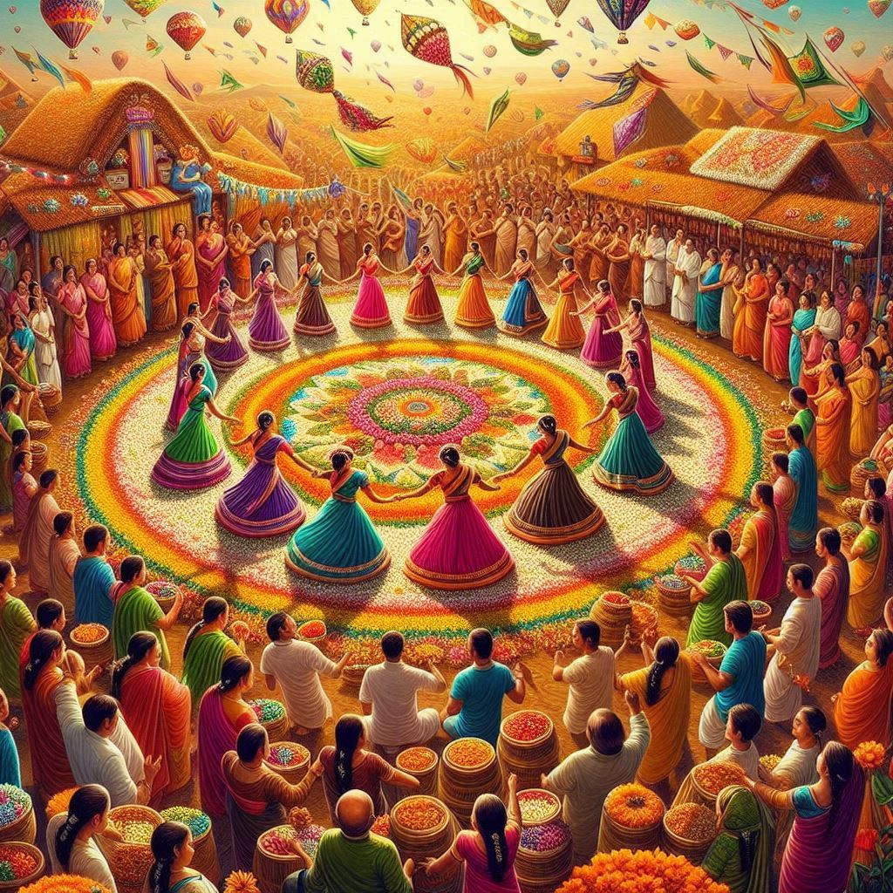
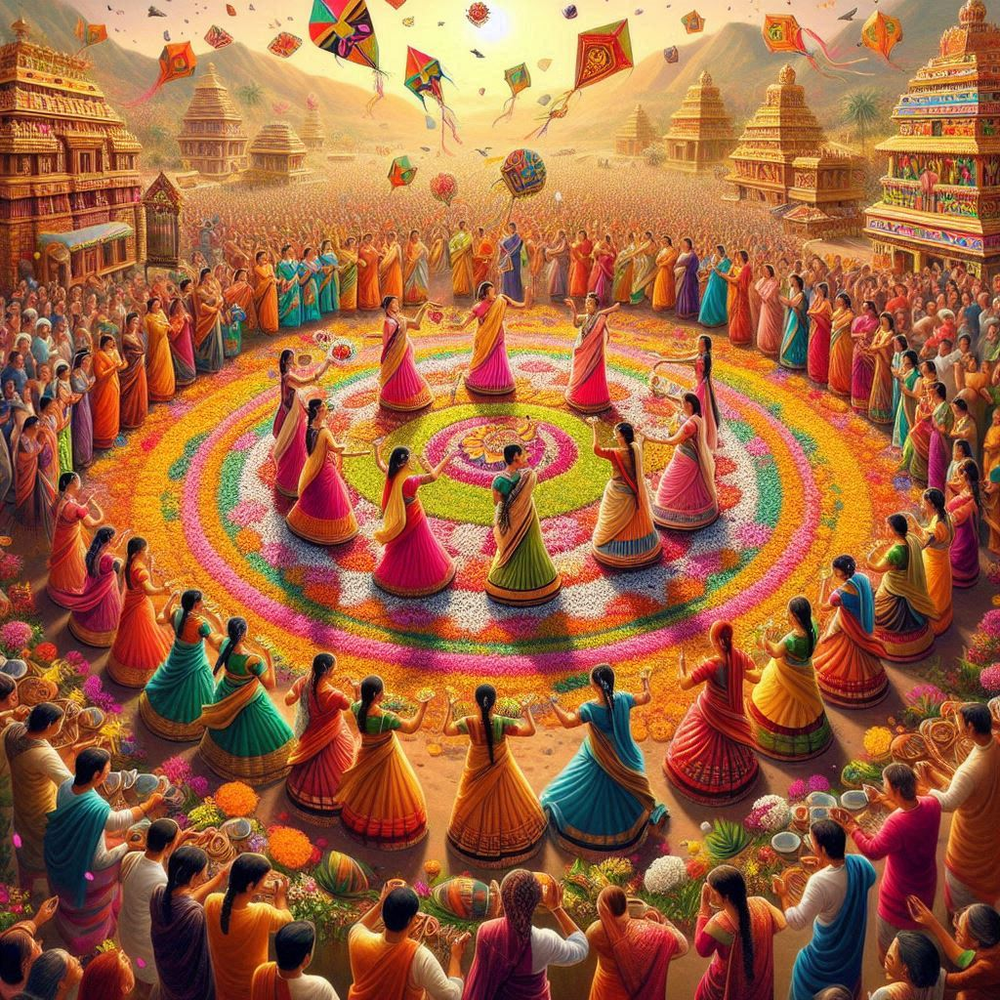

Telangana is known for its vibrant and diverse festivals, which reflect the region's rich cultural heritage, traditions, and agricultural practices. Here’s an overview of some of the major festivals celebrated in Telangana:
1. Bathukamma
- Description: A floral festival celebrated by women, Bathukamma is dedicated to the goddess Gauri. It involves creating intricate floral arrangements using seasonal flowers and is celebrated during the festival of Navratri.
- Activities: Women gather in groups to sing folk songs and dance around the Bathukamma (the floral stack) while offering prayers. The festival culminates with the immersion of the Bathukamma in water bodies.
2. Bonalu
- Description: Bonalu is a traditional festival dedicated to the goddess Mahakali, celebrated primarily in Hyderabad and surrounding regions. It usually takes place during the month of Ashadha (July-August).
- Activities: Women prepare offerings of rice, jaggery, and curd, placing them in decorated pots (Bonalu) which they carry on their heads to the temples. The festival includes vibrant processions, traditional music, and dances.
3. Sankranti
- Description: Sankranti, also known as Makar Sankranti, is a harvest festival celebrated in January. It marks the transition of the sun into the zodiac sign of Capricorn.
- Activities: The festival involves kite flying, special prayers, and the preparation of traditional sweets like tilgul (made from sesame and jaggery). Homes are decorated with rangoli, and families come together to celebrate.
4. Ugadi
- Description: Ugadi is the Telugu New Year and is celebrated with great enthusiasm in Telangana. It usually falls in March or April.
- Activities: Families prepare a special dish called Ugadi Pachadi, made with jaggery, neem flowers, and tamarind, symbolizing the mixture of sweet and bitter experiences in life. The day is marked by prayers, new clothes, and cultural events.
5. Dasara
- Description: Dasara, or Dussehra, is celebrated to honor the victory of good over evil, primarily focusing on the goddess Durga.
- Activities: In Telangana, the festival includes elaborate decorations of homes and temples, special pujas, and community gatherings. In some areas, the festival features processions and cultural performances.


6. Makaravilakku
- Description: Celebrated primarily in the Guntur district, this festival involves rituals and celebrations at the Sabarimala temple.
- Activities: Devotees undertake pilgrimages, perform special prayers, and participate in community feasts and gatherings.
7. Karthika Masam
- Description: This month, according to the lunar calendar, is considered highly auspicious. It is dedicated to worshiping Lord Shiva and is marked by various rituals.
- Activities: Devotees light lamps in their homes and temples, visit shrines, and perform special prayers throughout the month.
8. Sankranti
- Description: A major harvest festival celebrated in January, Sankranti marks the beginning of the harvest season.
- Activities: The festival is known for kite flying, feasting on traditional dishes, and community celebrations. People decorate their homes with rangoli and prepare sweets like pulihora (tamarind rice).
9. Buddha Purnima
- Description: Celebrated by the Buddhist community in Telangana, Buddha Purnima marks the birth, enlightenment, and death of Gautama Buddha.
- Activities: Devotees visit Buddhist shrines, offer prayers, and participate in community events. The festival promotes teachings of peace and compassion.
10. Shivaratri
- Description: A significant Hindu festival dedicated to Lord Shiva, celebrated with great fervor in Telangana.
- Activities: Devotees observe fasting, engage in night vigils, and perform special prayers at Shiva temples. The festival attracts large crowds, especially at prominent Shiva temples.
Conclusion
The festivals of Telangana are a vivid representation of its cultural richness, showcasing the region's traditions, rituals, and communal spirit. Each festival brings people together, fostering a sense of community and belonging while celebrating the diverse customs and practices of the state.